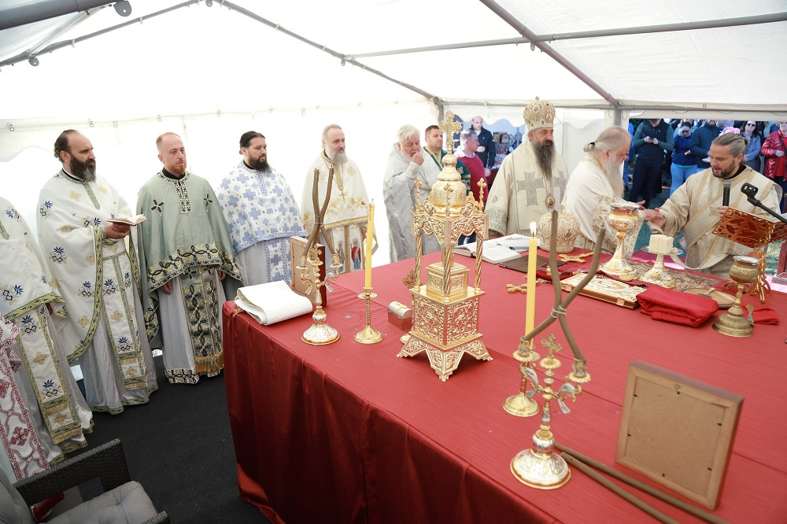

Поставен камен-темелник на новата црква во Берлин
Во Берлин денеска беа осветени и поставени темелите на нов храм на Македонската православна црква-Охридска архиепископија, посветен на „Св. Климент Охридски”, објави Европската епрахија на својот Фејсбук профил.
Чинот на осветуванье го изврши архиепископ охридски и македонски г.г Стефан во сослужение со митрополитот на Европската епархија г. Пимен и митрополитот на Тетовско- гостиварската епархија г. Јосиф, како и бројни свешенослужители од МПЦ-ОА.
Беше одржана и архиерејска литургија, а потоа организирана и културно – уметничка програма со Ангел Стојкоски, музичката група „Доминанта“ и фолклорниот ансамбл „Македонско Сонце” од Диселдорф.